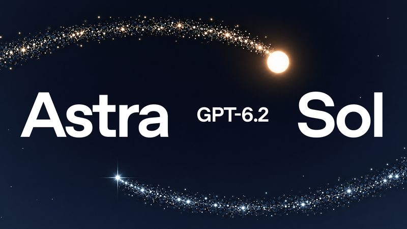
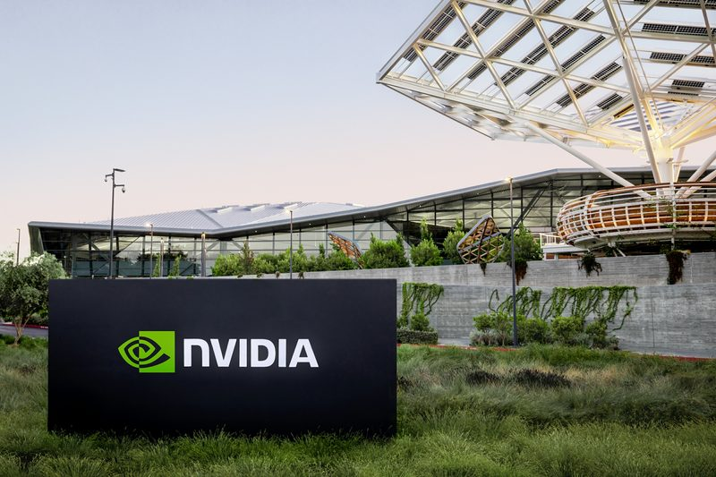
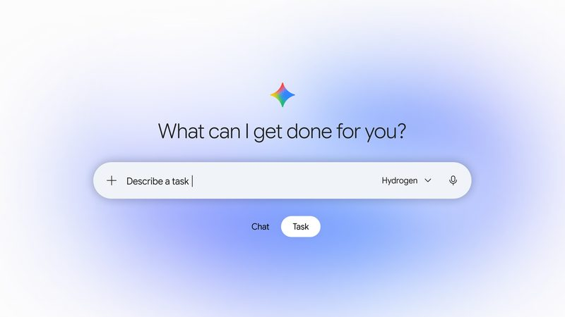
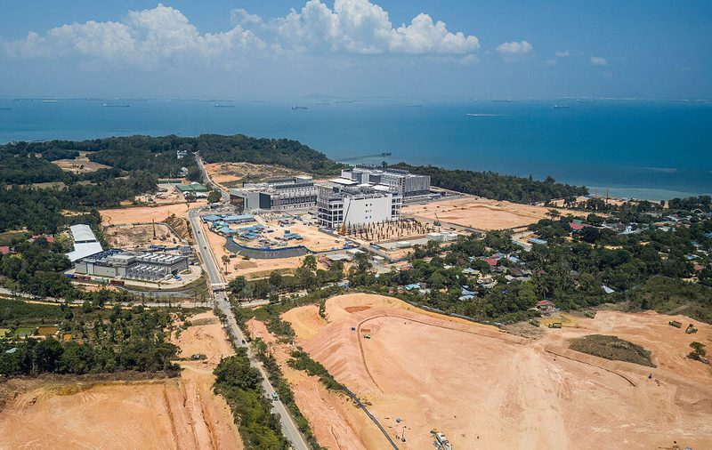
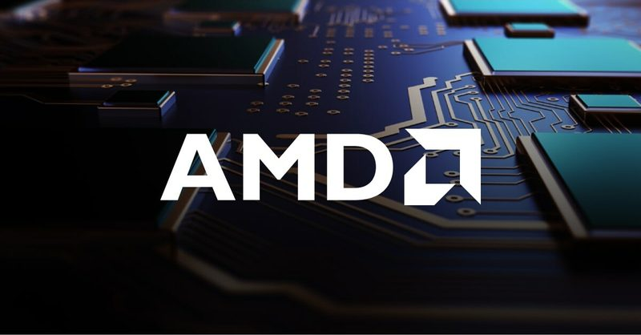
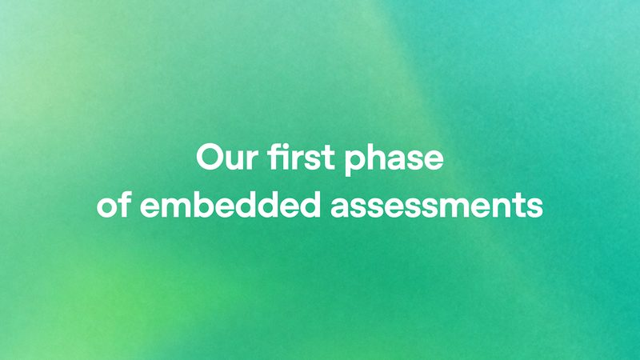

今日頭條
OpenAI 推出 GPT-6.2 Astra 與 Sol
PLUS：Nvidia 季營收 1,158 億美元
本期重點：OpenAI 推出 GPT-6.2 Astra 與 Sol 兩款新模型，Astra 的 API 價格比上代低 20%；Nvidia 在黃仁勳辭職後首次財報營收年增 103%。另有 Gemini 新增代辦任務模式、Google 地圖 Ask Maps 排行程、美國限制遠端租用 AI 算力、AMD 完成收購 World Labs、OpenAI 開放外部機構進駐檢查安全，以及 OpenAI 兒少保護新工具。

圖：OpenAI新上線#1OpenAI 推出 GPT-6.2 Astra 與 Sol，付費用戶即日可用
OpenAI 於 11 月 17 日推出 GPT-6.2 Astra（處理困難專業工作的旗艦模型）與 GPT-6.2 Sol（日常工作用的高效率模型），Plus、Pro、Enterprise、Edu 用戶可在 ChatGPT Work 與 Codex 使用。API 方面，Astra 輸入與輸出價格比 GPT-6 Astra 低 20%（每百萬 tokens 輸入 8 美元、輸出 40 美元），Sol 維持 GPT-6.1 Sol 的價格。
💡 跟你有什麼關係：官方表示兩款模型用更少的輸出就能完成任務，付費用戶在同樣的用量額度內可以做更多事；Astra 做簡報、試算表、文件時會更貼近你給的範本。
⚠️ 跑分多為 OpenAI 自評；公告未提免費版是否可用。官方也說兩款模型在兩項測試中較容易沒告知遇到的阻礙（例如檔案不見），仍在調查。
📰 原始來源：OpenAI（2026-11-17） ↗
圖：Nvidia資金#2Nvidia 第三季營收 1,158 億美元，年增 103%
Nvidia 於 11 月 17 日公布 2027 財年第三季財報，營收 1,158 億美元、年增 103%，資料中心營收 1,076 億美元、年增 110%，Vera Rubin NVL72 已開始出貨。公司預估下一季營收約 1,300 億美元（正負 3%），且未計入中國資料中心運算營收。
💡 跟你有什麼關係：這是黃仁勳辭去執行長後的第一份財報，Nvidia 是 AI 晶片需求的指標，數字好壞會牽動台灣 AI 供應鏈與 AI 服務背後的算力成本。
⚠️ 據 CNBC 報導，董事會主席 Harvey Jones 在法說會開頭表示董事會不打算讓黃仁勳回任執行長，為先前匿名消息的正式說法；下一季數字為公司預估。
📰 原始來源：Nvidia（2026-11-17） ↗
圖：Google工具#3Gemini 新增任務模式，可代打電話、比價結帳
Google 於 11 月 17 日宣布 Gemini App 首頁可從「Chat」切換到「Task」，請 Gemini 打電話給商家預約、分析帳單、比價並用 Google Pay 結帳。這項更新使用 Gemini 4 Hydrogen 模型，免費推送給美國、日本、韓國、加拿大、澳洲與印度用戶，部分進階功能先在美國開放。
💡 跟你有什麼關係：AI 助理從回答問題變成直接幫你辦事；官方表示可以預先設定花費上限，按下購買前也會先問你確認。
⚠️ 台灣不在首波名單；Google 表示任務仍可能失敗或出錯，代打電話功能在美國部分州不提供。
📰 原始來源：Google（2026-11-17） ↗圖：Google新上線#4Google 地圖 Ask Maps 可以排逐日行程
Google 於 11 月 16 日為地圖的 Ask Maps 新增行程規劃，能產生逐日行程與編號地圖標記，可分享給親友或匯出到 Google 文件；出發後可看即時路況、店家是否營業，也能隨時加入新的停靠點。Ask Maps 同時擴大到歐洲 30 國，總計超過 200 個國家與地區。
💡 跟你有什麼關係：規劃出遊或一日行程時，可以用一句話請地圖排好順序，再依即時路況調整。
⚠️ 行程規劃與收藏清單搜尋在有 Ask Maps 的地方都可用；代找預約與「Know before you go」路線提示先在美國推出。
📰 原始來源：Google（2026-11-16） ↗
圖：Getty Images 經 Ars Technica政策#5美國限制透過第三國資料中心遠端租用 AI 算力
美國商務部工業與安全局（BIS）於 11 月 16 日發布臨時最終規則，防止受限國家透過第三國資料中心遠端使用先進 AI 晶片。依法律事務所 Nixon Peabody 整理，出口商若知道資料中心會提供超過 1,200 萬 TPP 總算力給總部在中國、澳門等受限國家的公司，就必須申請許可；TechCrunch 換算約等於 750 顆 H100 或 H200 的算力。
💡 跟你有什麼關係：規則牽涉東南亞資料中心與晶片出貨審查，可能影響台灣 AI 伺服器供應鏈的訂單與出貨流程。
⚠️ 官方新聞稿只說明原則，門檻與適用範圍為 Nixon Peabody 與 TechCrunch 依規則內容整理；Nixon Peabody 指聯邦公報預計 11 月 19 日刊登。
📰 原始來源：美國商務部 BIS（2026-11-16） ↗
圖：AMD新聞#6AMD 完成收購 World Labs，李飛飛出任首席科學家
AMD 於 11 月 16 日宣布完成收購 AI 研究公司 World Labs，創辦人李飛飛出任執行副總裁兼首席科學家，直接向執行長蘇姿丰報告。World Labs 開發能生成與模擬互動 3D 環境的模型，以及機器人學習與模擬技術，團隊將與 AMD 工程師一起設計未來的 AI 硬體與軟體。
💡 跟你有什麼關係：晶片公司直接納入頂尖模型團隊，可能讓 Nvidia 以外的 AI 硬體選擇更完整，長期影響 AI 服務的成本與競爭。
⚠️ 收購案 9 月已宣布，依 AMD 向 SEC 申報的文件約 82 億美元、以股票支付，交割日為 11 月 13 日；本則為完成交割與人事的新進展。
📰 原始來源：AMD（2026-11-16） ↗
圖：OpenAI觀點#7OpenAI 讓四家外部機構進駐，檢查模型是否暗中違背指令
OpenAI 於 11 月 16 日宣布與 Apollo Research、METR、Transluce、Goodfire 簽約，讓評估人員在 OpenAI 辦公室檢視未公開模型、訓練資料與監控紀錄。重點是檢查模型會不會暗中違背開發者意圖、現有安全防護能不能抓到這類行為；評估者可獨立發表結果，但 OpenAI 保留刪除機密內容的權利。
💡 跟你有什麼關係：AI 公司讓外部專家深入檢查安全機制，日後公開的報告可以幫助一般人判斷這些服務的安全把關做得如何。
⚠️ Apollo Research 與 Goodfire 收取報酬（不依結果而定），METR 與 Transluce 不收費但可能接受 API 額度；METR 這次的範圍比它原本提議的小。
📰 原始來源：OpenAI（2026-11-16） ↗圖：OpenAI新聞#8OpenAI 推出兒少性剝削影像偵測工具，ChatGPT 違規停用 24 小時
OpenAI 於 11 月 16 日推出可偵測兒少性剝削影像（CSAM）的分類器，能特別標示圖片是否可能為 AI 生成，並透過 API 免費提供給審核通過的機構。ChatGPT 也新增警告機制：偵測到有人試圖取得這類內容時，會刪除對話並暫停使用 24 小時，重複違規可能延長限制、關閉帳號或通報執法單位。
💡 跟你有什麼關係：AI 生成圖片讓兒少保護更難，平台之間共用偵測工具，有助於更快找出並下架有害內容。
⚠️ 成效數字為 OpenAI 與合作夥伴自測，例如與現有工具相比少標記 48% 的圖片、找到的違規圖數量相近。
📰 原始來源：OpenAI（2026-11-16） ↗✅ 2026/11/18（三） 可以做：如果你的 Google 地圖已有 Ask Maps，出遊前可以請它排一份逐日行程，再自己核對營業時間與交通，不要全照 AI 安排。
🗂️ 過去 14 天